Nous allons voir les commandes Git indispensable que vous devez connaître pour faire de vous de bon developpeurs :
| # | Explications |
|---|---|
| git init | Permet la création d'un dépot git local en créant dans le repertoire un fichier .git lié à un serveur ou dépôt git. |
| git clone 'url du dépot' | Permet de copier un dépôt remote pour crée un local lié à ce remote. |
| git config | Permet de définir des valeurs de configuration Git au niveau global ou local d'un projet. Le cas d'usage le plus élémentaire pour git config consiste à l'appeler avec un nom de configuration, qui affichera la valeur définie à ce nom. |
| git alias | Le terme « alias » est synonyme de raccourci. La création d'alias est un schéma courant dans d'autres utilitaires populaires comme le shell Bash. Les alias permettent de créer des commandes plus courtes, qui sont mappées à celles plus longues.(ex: 'git config --global alias.co checkout' [alias] co = checkout) 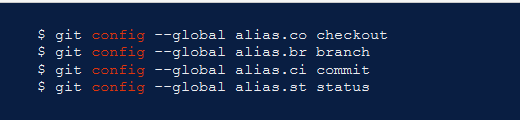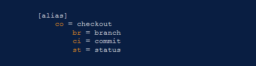 |
| git remote add 'nom_du_remote (origin ou autre)' 'lien_du_serveur' | Permet de lié votre repo local a votre repo remote 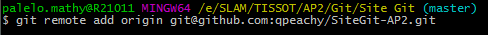 |
| git status | Permet de connaître l'état courant de vos copies local(les modifications ont-elles été commitées, les fichiers ajoutés, les commit pushé). Les interface graphiques vous l'indique souvent par des couleurs et icones 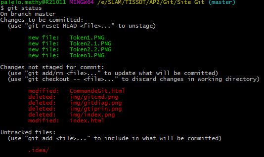 |
| git add 'nom du fichier' | Permet lorsque vous créez un fichier dans votre version de travail, il faut l'integré grâce à cette (.* ex:"git add .txt" permet d'ajouter tous les fichier d'un certain type) 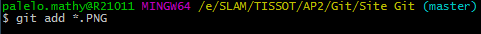 |
| git commit -m "Message du commit" | Permet de déposer les modifications de la verion de travail sur la version locale. Il est obligatoire d'accompagner cette commande d'un message, il indique le contenue des modifications 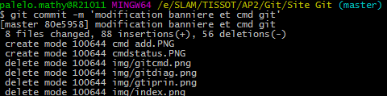 |
| git push | Permet de "pousser" la branche actuelle du local vers le remote. Git applique alors successivement tous les commit au remote (ATTENTION: il est recommandé de faire un git commit avant d'effectuer cette commande) 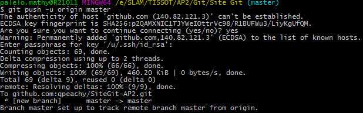 |
| git pull | Permet de faire un fetch du contenu d'un dépôt distant et pour le télécharger, puis pour mettre à jour immédiatement le dépôt local qui correspond à ce contenu. ... La commande git pull est en fait la combinaison de deux autres commandes, git fetch suivie de git merge . |
| git merge 'branche' | Permet de fusionner deux éléments: on ajoute les modifications de l'un à l'autre. L'opération est, dans la plupart des cas, transparente. Mais des conflits peuvent apparaître: deux modifications sont incompatibles(usuellement: on a touché à la même ligne de code), il faut alors résoude le conflit : choisir/écrire à la main la version que l'on veut garder pour chaque conflit |
| git branch | Permet de répertorier toutes les branches de votre dépôt. Cette commande est synonyme de git branch --list. en ajoutant 'nom branche' à la commande cela permet de créer une branche |
| git checkout | Permet de basculer entre les branches créées au moyen de git branch. |
| git reset | Elle peut être appelée de trois façons, qui correspondent aux arguments de ligne de commande --soft, --mixed et --hard. Ces trois arguments correspondent chacun aux trois mécanismes de gestion des états internes de Git, l'arborescence des commits (HEAD), l'index de staging et le répertoire de travail. |
| git fetch 'remote' | La commande git reset est un outil complexe et polyvalent pour annuler les changements. Elle peut être appelée de trois façons, qui correspondent aux arguments de ligne de commande --soft, --mixed et --hard. Ces trois arguments correspondent chacun aux trois mécanismes de gestion des états internes de Git, l'arborescence des commits (HEAD), l'index de staging et le répertoire de travail. |
| git rm 'nom du fichier' | Permet de supprimer les fichiers du working tree et de l’index |
Il ne s'agit que de commandes de base introduisantes à git. Toutes les commandes et leurs dérivées se trouve sur la doc Git
Nous allons maintenant voir les différentes étapes à la création un token sur Github :
Qu'est-ce qu'un token? n token est un actif numérique émis et échangeable sur une blockchain ( la blockchain est un grand livre partagé et inaltérable qui facilite le processus d'enregistrement des transactions et de suivi des actifs dans un réseau commercial).
1- Se diriger vers la page de création de token depuis la barre de menu déroulé sous l'image utilisateur ('Settings/Developer settings'), selectionner 'Personnal access tokens'
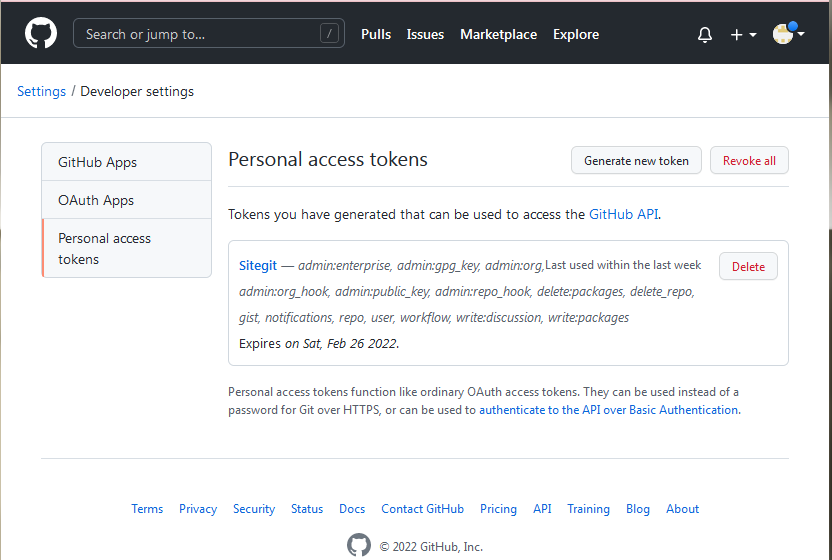2- Indiquer pourquoi ce token sera créé, une date d'expiration, selectionner toutes les cases et selectionner 'Generate token'
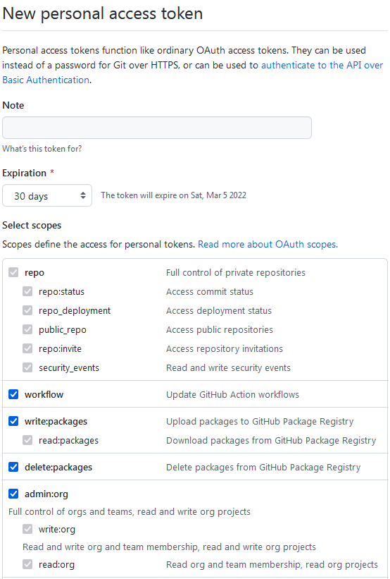 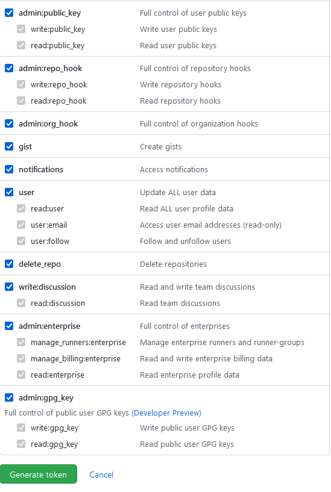3- Une fois le token créé copier le et sauvegarder le quelque part car il ne sera plus visible par la suite
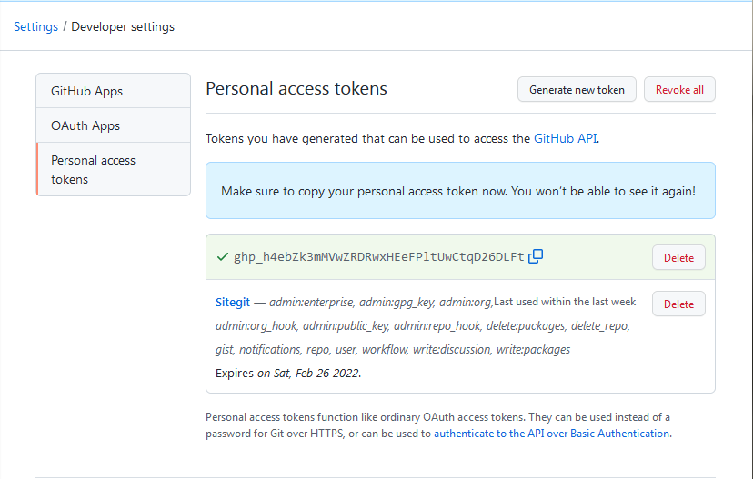